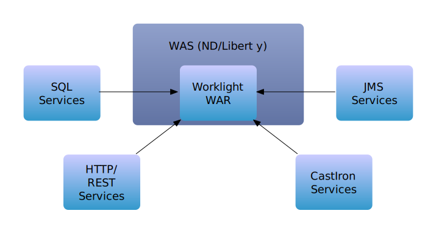
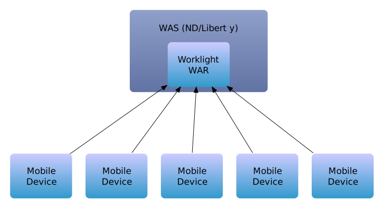
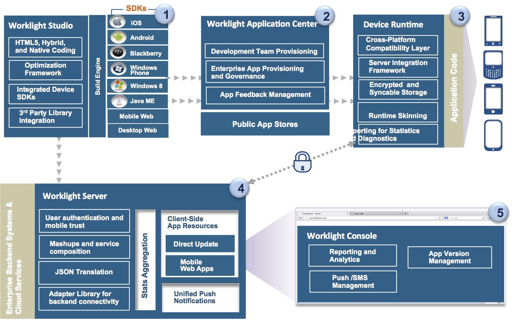
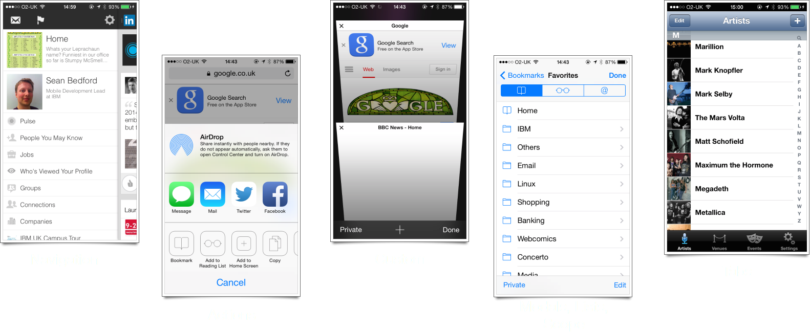
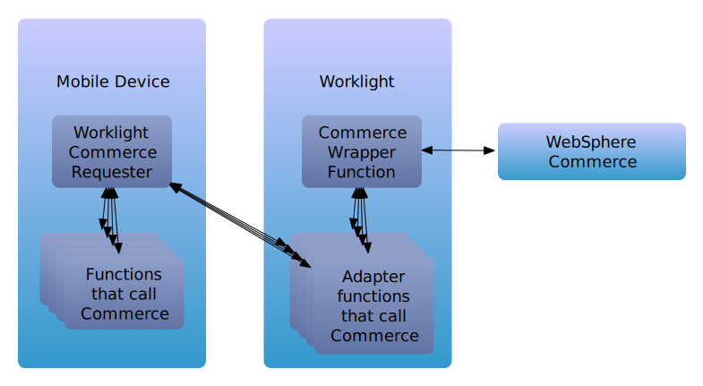

What is Worklight? - Server side

What is Worklight? - Client side

The Bigger Picture

Why is it good?
- Out-of-box support for app analytics (Device, OS, code version)
- Direct update provides a powerful way to quickly patch issues
- App versioning scheme allows operational management of multiple deployed versions
- Security model provides easy control of back end resources
- Not "just Cordova (PhoneGap)" - native APIs for iOS, Android, and devices running JavaME
Cordova Primer
- API layer between web container and native functionality
- You can write a new Cordova plugin with native implementations on each platform you want to support
- This plugin can then be wrapped in to JavaScript to allow for calling from a web container
Client side code
MVC approach
- How do you store data?
- How do you display data?
- How do you handle the business rules?
Pick a framework that supports MVC. It will make your life MUCH easier :-)
Think of the user
- Think about how the user is going to interact with your app
- Consider control and text sizes. Apple recommends >= 44px * 44px tappable area
- Design, prototype, and test with actual end-users
- Don't be afraid to scrap a design and start again
Common UI Patterns

Server side code
Consistent endpoint management
- Common problem: How to handle errors, timeouts, bad responses consistently?
- Solution: Provide a consistent client- and server-side endpoint
Basic Worklight user authentication
- A key feature of Worklight is it's security model
- This allows the securing of a back end call with a single line of code (once it is set up)
Example
- In your adapter's XML file, add a security test to a function
- This will trigger a security test for a realm you've defined in authenticationConfig.xml
- This in turn will issue a challenge for "MySecureRealm" if there is no user logged in for that realm
- At this point, your client code can handle the challenge, by providing authentication details, tokens etc